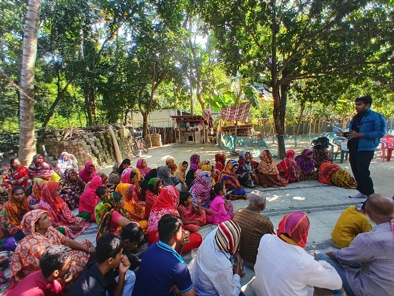

Leadership & fieldwork
Community environmental clubs, national cadet service, leadership training and practical fieldwork.
Research beyond the desk.
Community engagement, leadership training, and research fieldwork.

Sibsa, Kapotakkho & Sundarban Environmental Clubs
Co-founded three local clubs in Paikgachha, Tala and Koyra to support rural women's participation in climate awareness, local dialogue and environmental decision-making. Activities included monthly meetings and observances of International Women's Day and World Environment Day.
Bangladesh National Cadet Corps
Served as Lance Corporal and participated in a winter training camp, developing teamwork, discipline and field coordination.
British Council · LEAD Bangladesh
Participated in the 2021–2022 leadership programme focused on community-development initiatives.
Fieldwork & scientific service
Field sampling, FGDs, KIIs and volunteer support for environmental conferences in 2022 and 2024.
Moments from community & fieldwork
Field and community photographs. Identifiable participants are shown only with appropriate permission.